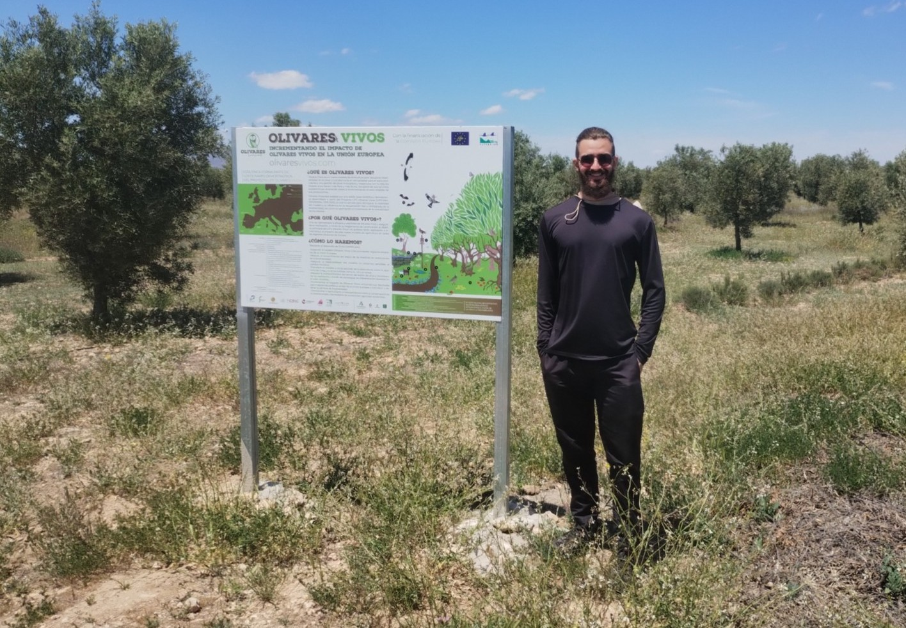
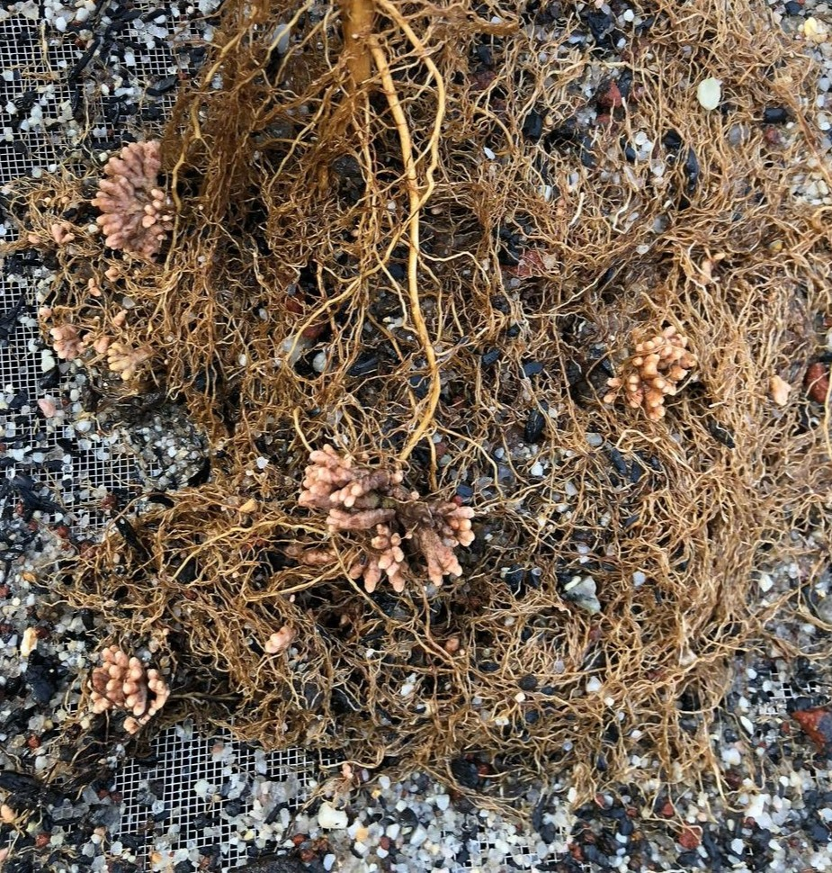
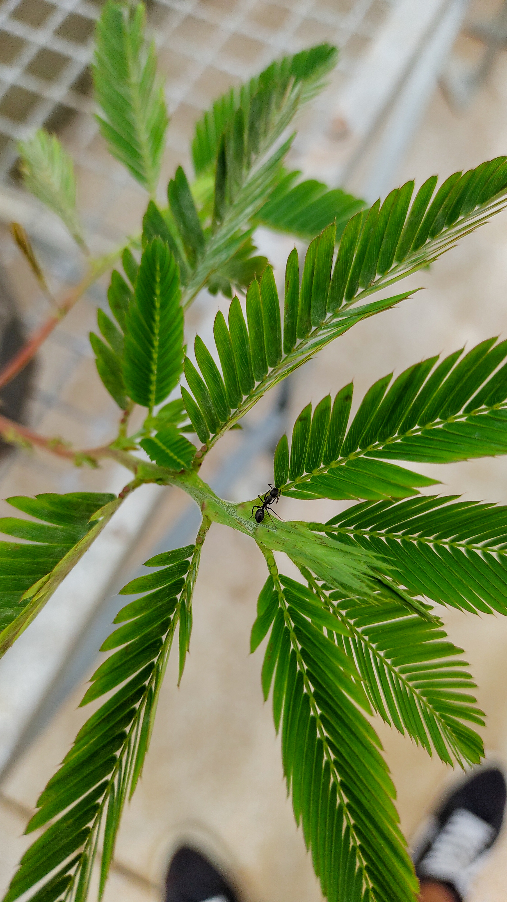
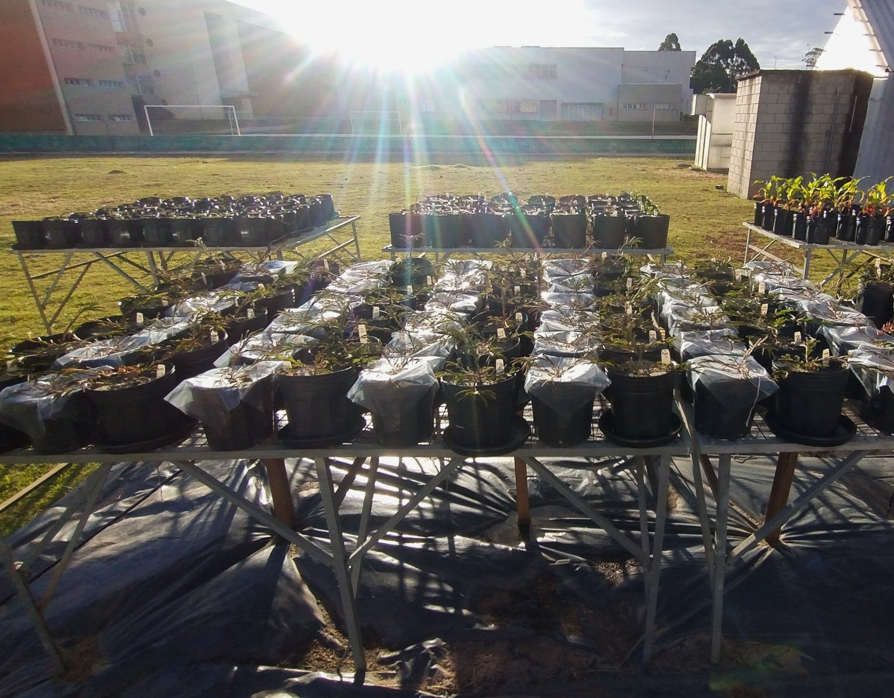

Lucas José Reis Bartsch
Mestrado pelo Programa de Evolução e Diversidade — Universidade Federal do ABC (UFABC)
Trajetória no LIPA
Clique em uma etapa para ver detalhes.
2017–2022 · UNIFESP
- Orientadora:
- Laura Leal de Sousa
- Coorientador:
- Anselmo Nogueira
- Título:
- Como o Sombreamento Influencia a Secreção de Néctar Extrafloral em Chamaecrista nictitans?
2023–2026 · UFABC
- Orientador:
- Anselmo Nogueira
- Coorientadores:
- Célio Angolini · Caian Gerolamo
- Título:
- Variações temporais na alocação de carboidratos em plantas: Impacto do estresse hídrico sobre interações mutualistas.
- Ecofisiologia vegetal
- Mutualismo planta-bactéria
- Estresse hídrico
Sobre
Seu projeto explorou como a restrição hídrica pode afetar o mutualismo entre plantas e bactérias fixadoras de nitrogênio. Essa interação é essencial para o suprimento de nitrogênio da planta, mas sua manutenção depende da disponibilidade de carbono no corpo vegetal — recurso que pode ser comprometido pela redução da fotossíntese sob estresse hídrico. Os resultados mostraram que, apesar da redução na assimilação de carbono e nos estoques de carboidratos, a biomassa dos nódulos que abrigam as bactérias fixadoras diminuiu proporcionalmente à biomassa das plantas, indicando que o investimento relativo na nodulação foi mantido mesmo sob estresse.
Graduado em Ciências Biológicas pela Universidade Federal de São Paulo (UNIFESP) e mestre em Evolução e Diversidade pela UFABC (2026). Seus interesses de pesquisa estão nas áreas de ecofisiologia vegetal e ecologia de mutualismos, com foco em como o mutualismo de proteção planta-formiga e o mutualismo de nutrição planta-bactéria fixadora de nitrogênio respondem a fatores ambientais como sombreamento e restrição hídrica.



